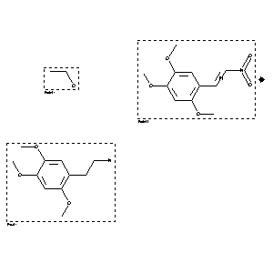

 |
| FA | RX(1); FLST(1); RX(1) |
Reaction (1 of 1)
| Reaction ID | 7049056 |
| Reactant BRN | 1718733; 1884248 |
| Reactant | ethanol; zinc-powder; trans-b-nitro-2.4.5-trimethoxy-styrene |
| Product BRN | 2727036 |
| Product | 2,4,5-trimethoxy-phenethylamine |
| No. of Reaction Details | 1 |
Reaction Details (1 of 1)
| Reaction Classification | Chemical behaviour |
| Other Conditions | Behandeln des Reaktionsprodukts in Aethanol und wss. Essigsaeure mit Natrium-Amalgam |
| Comment | Handbook |
| Citation Pointer | 2185896; Journal; Jansen; RTCPA3; Recl.Trav.Chim.Pays-Bas; 50; 1931; 291, 301; |
Reference (1 of 1)
| Citation Number | 2185896 |
| Document Type | Journal |
| Authors | Jansen |
| CODEN | RTCPA3 |
| Journal Title | Recl.Trav.Chim.Pays-Bas |
| (Series) Volume | 50 |
| Publication Year | 1931 |
| Page | 291, 301 |